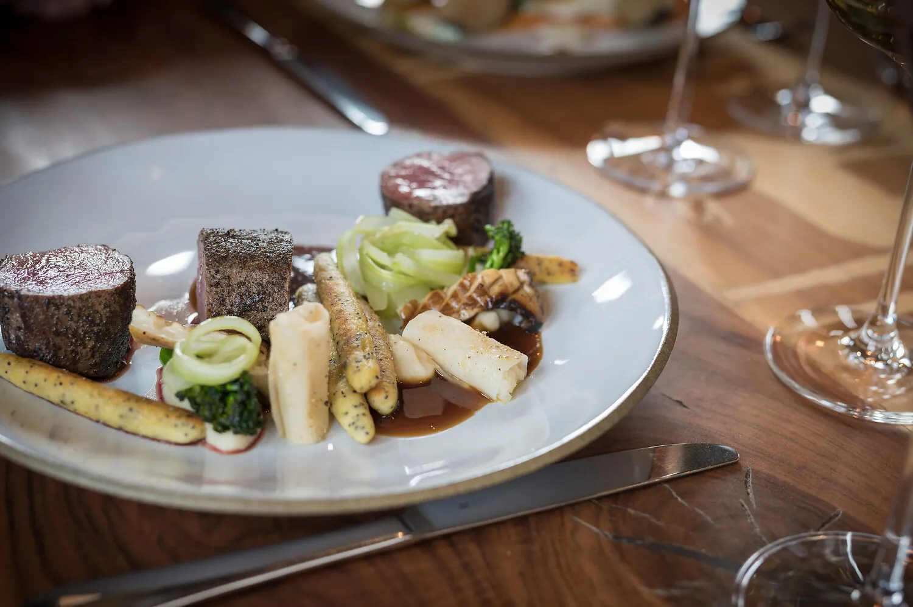
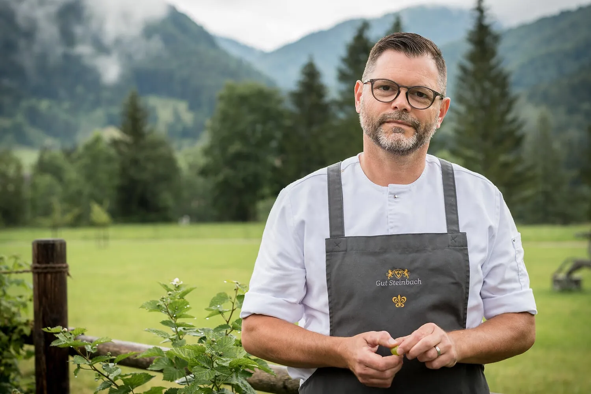
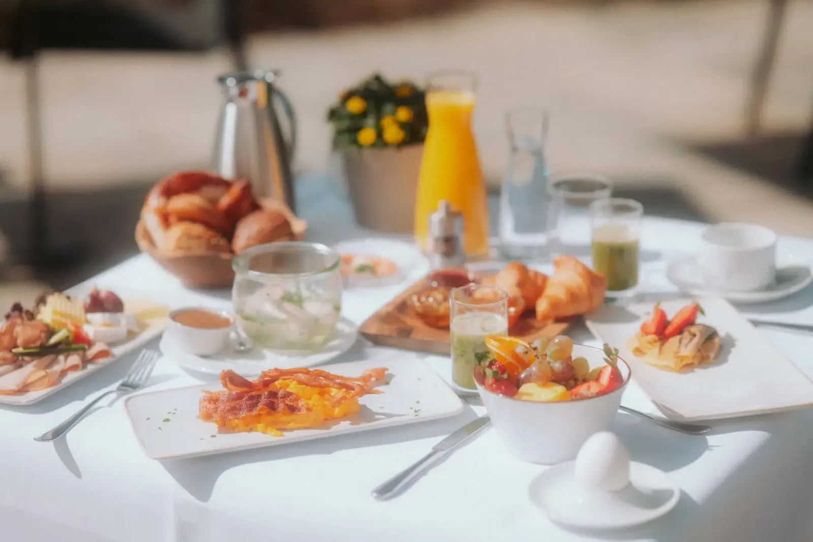
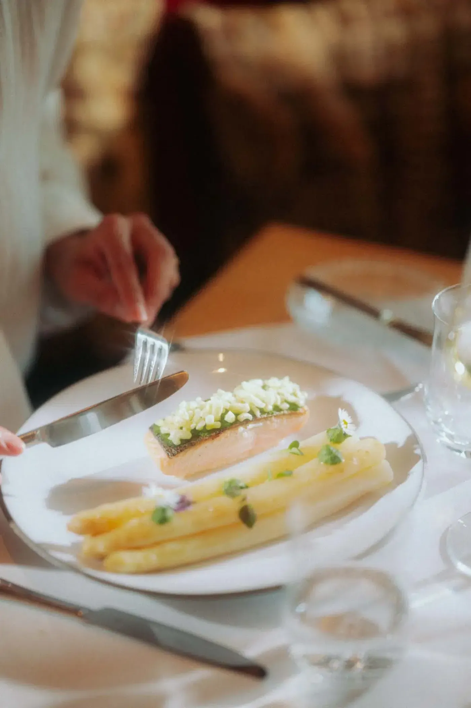

Kulinarik · Restaurant HEIMAT
Gekocht wird, was das Gut hergibt.
Vier Stuben, eine Sonnenterrasse und ein Grüner Michelin-Stern für die Küche von Achim Hack. Täglich geöffnet — auch für Gäste, die nicht im Haus wohnen.
01 Das Prinzip

Achtzig Prozent, achtzig Kilometer.
Küchenchef Achim Hack braucht keine weiten Lieferwege. Das meiste wächst, weidet und reift in Sichtweite des Hauses.
80 Prozent der Zutaten kommen aus höchstens 80 Kilometern Umkreis: Die Kräuter schneidet die Küche im eigenen Garten hinterm Haus, das Wild stammt aus eigener Haltung auf dem Gut, der Rest von Höfen und Handwerkern der Nachbarschaft. Der Guide Michelin würdigt diese Arbeit seit 2023 mit dem Grünen Stern.
80 Prozent der Zutaten aus höchstens 80 Kilometern — die einzige Regel, die in dieser Küche nicht verhandelt wird.
02 Die Stuben

Vier Stuben, vier Temperamente.
Altes Holz, gedeckte Tische, kurze Wege aus der Küche — jede Stube hat ihren eigenen Ton.
Tisch reservieren03 Küchenzeiten & Preise

Verlässliche Zeiten, klare Preise.
Vom Frühstück bis zum Spätimbiss um 22 Uhr — das HEIMAT kocht täglich, auch für externe Gäste.
Vegetarische Gerichte stehen durchgehend auf der Karte, dazu eine begrenzte vegane Auswahl. Die Halbpension buchen Sie direkt zur Übernachtung dazu.
| Küchenzeit | Öffnungszeiten |
|---|---|
| Frühstück | Mo–Fr 7:30–10:30 · Sa, So & Feiertag 7:30–11:00 |
| Mittag & Brotzeit | täglich 12:00–13:30 |
| Abendessen | täglich 18:00–20:30 |
| Bar & Spätimbiss | täglich bis 22:00 |
04 Gutsfrühstück

Der Morgen beginnt mit einer Brezn.
Frisch von der Bäckerei Pretzner, dazu Käse und Wurst aus dem Chiemgau und Eierspeisen, die erst zubereitet werden, wenn Sie am Tisch sitzen.
Wer in einem der sieben Chalets wohnt, muss dafür nicht einmal aus dem Haus: Das Gutsteam liefert das Frühstück kostenfrei an die Chalet-Tür.
05 Terrasse & Weinlounge
Ein Glas, ein Blick, ein langer Abend.
Auf der Sonnenterrasse stehen die Chiemgauer Alpen im Blick — nachmittags zu Kaffee und Kuchen, abends zum Cocktail.
In der Weinlounge wartet eine kuratierte Auswahl, regelmäßig laden Gastkoch- und Themenabende an den Tisch. Und wer tiefer in die Region will: Das Gut ist Ausgangspunkt für kulinarische Touren zu Käsereien, Brennereien und Almhütten.
- Sonnenterrasse
- Weinlounge
- Gastkochabende
- Themenabende
- Kulinarische Touren
06 Reservieren
Ihr Tisch im HEIMAT — ein Anruf genügt.
Das Restaurant ist täglich geöffnet, auch für Gäste, die nicht im Haus wohnen. Reservieren Sie telefonisch oder per E-Mail — das Team hilft auch bei der Wahl der Stube.

Genießer-Tage: zwei Nächte, ein Menü mit Stern-Prinzip.
Zwei Übernachtungen mit 3-Gänge-Menü im HEIMAT, Gutsfrühstück und 2.000 m² Spa — ab 439 € pro Person.
Genießer-Tage ansehen — ab 439 € p. P.